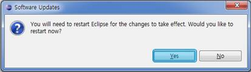

> Dexter Download
1. Click * Help> Install New Software menu for Dexter Installation.
2. Add "Dexter Download" in 'Work with:' tab as below.

3. Check the name of Dexter and click Next>.

4. Select I accept the terms of the license agreement and click Finish

* If check for Security is required, select Yes to install Dexter now.

* Then restart is required, select Yes to complete the setup Dexter.
Restart your eclipse after the installation.

5. You can check Dexter Icon in your eclipse as below.